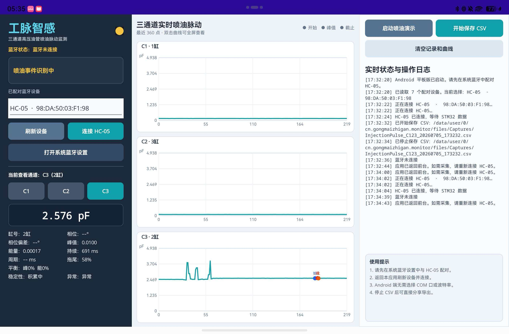

三通道实时曲线
C1、C2、C3 喷油脉动同步展示，支持单通道放大查看。

工脉智感面向船舶柴油机高压油管，使用外贴式柔性电容传感器感知喷油脉动引起的管壁微振动与微形变。系统通过 STM32、PCAP01 与 HC-05/串口完成 C1/C2/C3 三通道采集，在 Android 和 Windows 端呈现连续“喷射心电图”，辅助多缸一致性比较、维修前后对比和异常趋势提示。
说明：本系统测量的是油管外壁响应，不直接等同于管内绝对压力或独立故障诊断结论。
三路波形同步展示，把幅值、相对时序、持续时间和稳定性放在同一个视野中。
C1、C2、C3 喷油脉动同步展示，支持单通道放大查看。
提取起始、峰值、截止、周期、能量和稳定性特征。
Android 端直接连接已配对 HC-05，后台可持续接收数据。
完整保存时间、通道、电容值与原始数据，便于回溯对比。